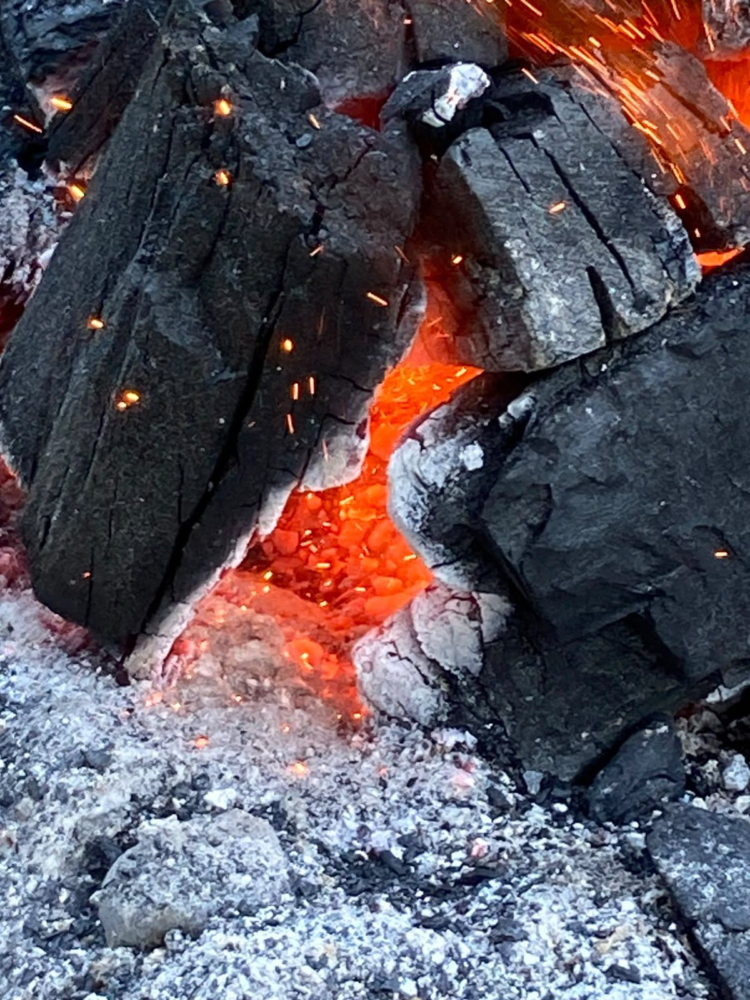
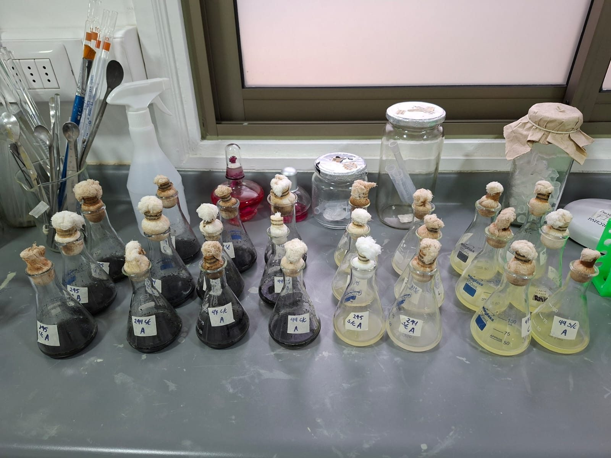

La problemática de los incendios forestales
Los incendios forestales son un fenómeno cada vez más frecuente e intenso en el centro-sur de Chile, favorecido por la megasequía de la última década, el cambio climático y la expansión de plantaciones forestales de especies exóticas de rápido crecimiento, como Pinus radiata (González et al. 2018). La Región del Maule ha sido escenario recurrente de grandes incendios, que han quemado cientos de miles de hectáreas de bosque nativo y de plantaciones (Bowman et al. 2019).
El fuego no solo destruye la vegetación: también transforma en profundidad el suelo, alterando su estructura física, su química y, sobre todo, las comunidades de microorganismos que lo habitan.

El rol de los microorganismos post-incendio
Bacterias y hongos del suelo están entre los primeros organismos en responder tras el paso del fuego. Son claves en el reciclaje de nutrientes, en la descomposición del carbón y la materia orgánica remanente, en la formación de nuevo suelo fértil y en el restablecimiento de las relaciones simbióticas con las plantas que comienzan a regenerar el bosque.
Entender qué microorganismos sobreviven o recolonizan el suelo, cómo cambian con el tiempo transcurrido desde el incendio y qué capacidad tienen de crecer sobre sustratos ricos en carbón es clave para comprender, y eventualmente favorecer, la recuperación de estos ecosistemas. A este conjunto de microorganismos asociados a suelos quemados lo llamamos el pirobioma.
Qué queremos responder
Después de los megaincendios de 2017, el pino (Pinus radiata), una especie exótica adaptada al fuego, se está estableciendo con fuerza en los parches quemados del bosque maulino, mientras que los robles nativos como el ruil y el hualo regeneran mucho menos (González et al. 2023). En ensayos previos observamos que, en suelo quemado, a las especies nativas les va mal, pero se recuperan cuando se les devuelven los microorganismos del bosque maduro; al pino, en cambio, le da casi lo mismo.
El proyecto busca entender qué papel juega el microbioma del suelo en esa competencia entre árboles nativos y exóticos después del fuego. Para eso nos proponemos:
- Describir los microorganismos del suelo del bosque maulino conservado y de sus distintos estados tras el fuego: quemado sin vegetación, recolonizado por especies nativas o invadido por pino.
- Identificar cómo los microorganismos del bosque original ayudan al ruil (Nothofagus alessandrii) y al hualo (N. glauca) a establecerse en suelos quemados.
- Evaluar si los microorganismos del suelo cambian el resultado de la competencia entre estos robles nativos y el pino.
- Estimar, con información espacial, dónde podrían establecerse estas especies en el Maule bajo distintos escenarios de incendios.
El catálogo de cepas cultivables es una de las piezas de este trabajo: una colección viva de los microorganismos que resisten en los suelos quemados.
¿De dónde vienen los suelos?
Las cepas del catálogo provienen de un diseño de muestreo pareado en la Región del Maule, que compara bosque nativo y plantación de Pinus radiata en tres condiciones de quemado.
| Condición | Bosque nativo | Plantación de P. radiata |
|---|---|---|
| Sin quemar (control) | Pilén, Reserva El Secreto de Pilén | Comuna de Empedrado |
| Quemado reciente (~1 año) | Molco | Huaquén |
| Quemado antiguo (~8 años) | Reserva Los Ruiles | Empedrado |

El catálogo reúne por ahora las cepas cultivables aisladas en agar con carbón desde los suelos quemados de este diseño. A medida que se sumen nuevas cepas, se irán completando las demás condiciones.
¿Para qué pueden servir estos microorganismos?
- Restauración de suelos degradados por el fuego, identificando microorganismos con potencial para acelerar la recuperación del ecosistema.
- Bioindicadores de la resiliencia y salud del suelo, siguiendo cómo cambian estas comunidades con el tiempo transcurrido desde el incendio.
- Potencial biotecnológico de cepas con capacidades particulares, como su crecimiento sobre sustratos con carbón, con posibles aplicaciones en agricultura o biorremediación.
Ver las 139 cepas del catálogo
Agradecimientos
Este proyecto es posible gracias al financiamiento de la Agencia Nacional de Investigación y Desarrollo (ANID), a la Universidad de Talca y al Centro de Ecología Integrativa. Agradecemos a la Reserva El Secreto de Pilén por facilitar el acceso a los sitios de muestreo, y a CONAF Ñuble y CONAF Maule, que además aportaron semillas y plantas para nuestros experimentos: hualos y maquis desde Ñuble, y ruiles desde Maule.
Referencias
- Bowman, D.M.J.S., Moreira-Muñoz, A., Kolden, C.A., et al. (2019). Human–environmental drivers and impacts of the globally extreme 2017 Chilean fires. Ambio, 48, 350–362.
- González, M.E., Galleguillos, M., Lopatin, J., Leal, C., Becerra-Rodas, C., Lara, A. y San Martín, J. (2023). Surviving in a hostile landscape: Nothofagus alessandrii remnant forests threatened by mega-fires and exotic pine invasion in the coastal range of central Chile. Oryx, 57, 228–238.
- González, M.E., Gómez-González, S., Lara, A., Garreaud, R. y Díaz-Hormazábal, I. (2018). The 2010–2015 Megadrought and its influence on the fire regime in central and south-central Chile. Ecosphere, 9(8), e02300.